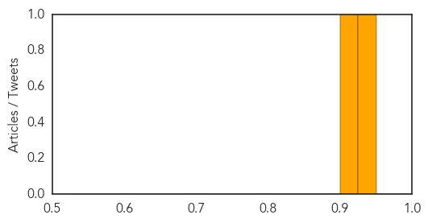

Measles
30-Day Web Trend
2 alerts, 0 warnings
30-Day Twitter Trend
0 alerts, 0 warnings

Article Locations
Article Confidences
Top Articles:
Top Tweets:
-
No tweets found for Oct 10, 2014
Chikungunya
30-Day Web Trend
0 alerts, 2 warnings

30-Day Twitter Trend
0 alerts, 0 warnings

Article Locations

Article Confidences
Top Articles:
- 0.976
- Ministry monitoring chikungunya -- NationNews Barbados -- Local, Regional and International News nationnews.com
- 0.958
- Community engagement is vital for Haiti’s chikungunya prevention campaign
- 0.832
- MP for West Portland angered by inadequate arrangements for treatment of chikungunya symptoms
- 0.787
- 'Hundreds' with virus symptoms -- NationNews Barbados -- Local, Regional and International News nationnews.com
Top Tweets:
-
No tweets found for Oct 10, 2014